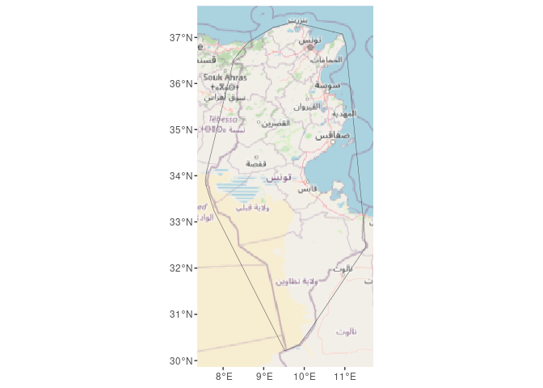
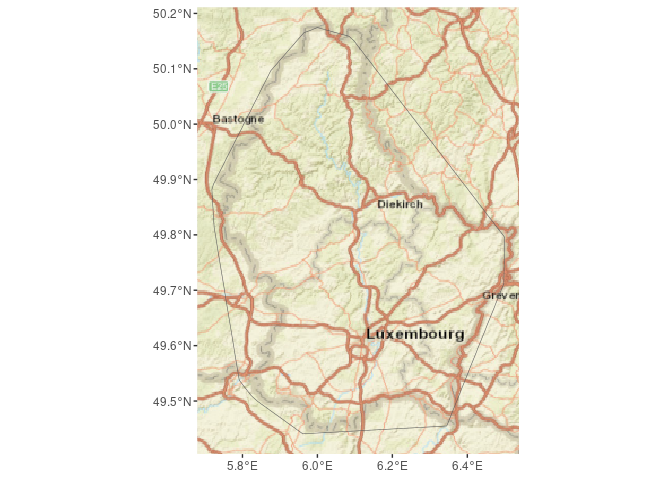

The goal of ggdal is to get background image data for ggplot2.
No futzing around with map tiles or zooms or other programs.
Installation
You can install the development version of ggdal from GitHub with:
# install.packages("devtools")
devtools::install_github("hypertidy/ggdal")Example
Use ‘dsn = “osm”’ or “virtualearth”, or input custom (WIP).
Use any map projection. Currently examples only provided for use with sf objects, WIP.
library(ggplot2)
library(ggdal)
data(iw)
ggplot() +
annotation_gdal(dsn = "osm") +
geom_sf(data = sf::st_transform(iw, "EPSG:3577"), fill = NA, col = "grey50")
ggplot() +
annotation_gdal(dsn = "virtualearth") +
geom_sf(data = sfdct::antarctica, fill = NA, col = "grey50") + coord_sf(xlim = c(-6378137, 6378137),
ylim = c(-6378137, 6378137))
#> old-style crs object detected; please recreate object with a recent sf::st_crs()
#> old-style crs object detected; please recreate object with a recent sf::st_crs()fun
For a bit of a lark, get your favourite dataset ‘x’ and run this code a few times.
laea <- function(x) {
bb <- sf::st_bbox(x)
sf::st_transform(x, sprintf("+proj=laea +lon_0=%f lat_0=%f", mean(bb[c(1, 3)]), mean(bb[c(2, 3)])))
}
x <- sf::read_sf("https://datahub.io/core/geo-countries/r/countries.geojson")
ggplot() +
annotation_gdal(sample(c("osm", "virtualearth", arcgis_mapserver_imgery()), 1)) +
geom_sf(data = laea(sf::st_convex_hull(dplyr::sample_n(x, 1))), fill = NA)
ggplot() +
annotation_gdal(sample(c("osm", "virtualearth", arcgis_mapserver_imgery()), 1)) +
geom_sf(data = laea(sf::st_convex_hull(dplyr::sample_n(x, 1))), fill = NA)
ggplot() +
annotation_gdal(sample(c("osm", "virtualearth", arcgis_mapserver_imgery()), 1)) +
geom_sf(data = laea(sf::st_convex_hull(dplyr::sample_n(x, 1))), fill = NA)
ggplot() +
annotation_gdal(sample(c("osm", "virtualearth", arcgis_mapserver_imgery()), 1)) +
geom_sf(data = laea(sf::st_convex_hull(dplyr::sample_n(x, 1))), fill = NA)
ggplot() +
annotation_gdal(sample(c("osm", "virtualearth", arcgis_mapserver_imgery()), 1)) +
geom_sf(data = laea(sf::st_convex_hull(dplyr::sample_n(x, 1))), fill = NA)
ggplot() +
annotation_gdal(sample(c("osm", "virtualearth", arcgis_mapserver_imgery()), 1)) +
geom_sf(data = laea(sf::st_convex_hull(dplyr::sample_n(x, 1))), fill = NA)Code of Conduct
Please note that the ggdal project is released with a Contributor Code of Conduct. By contributing to this project, you agree to abide by its terms.